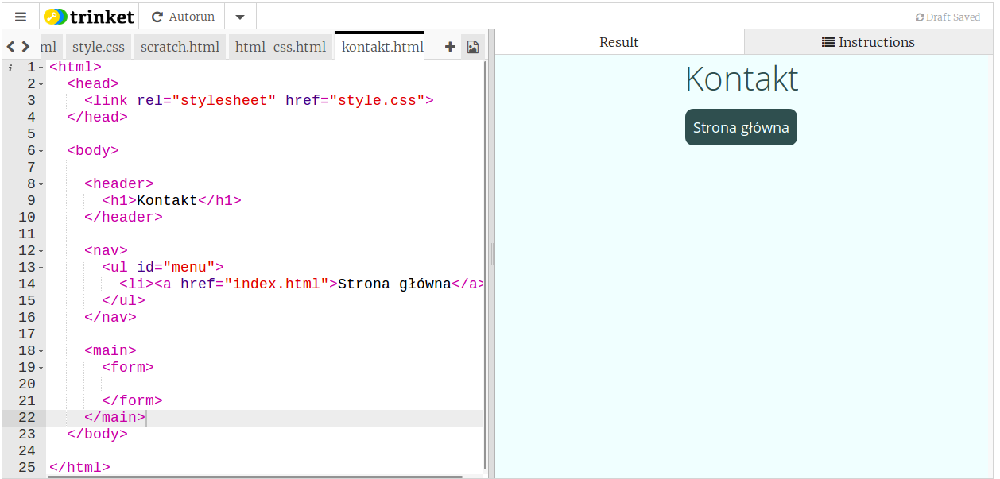
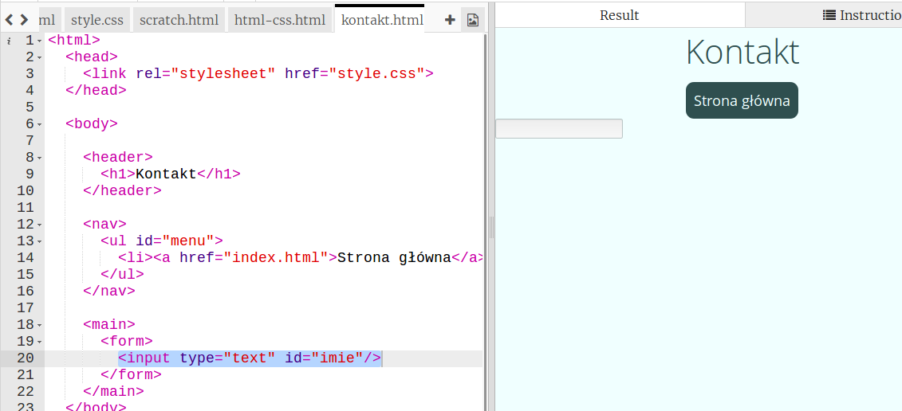
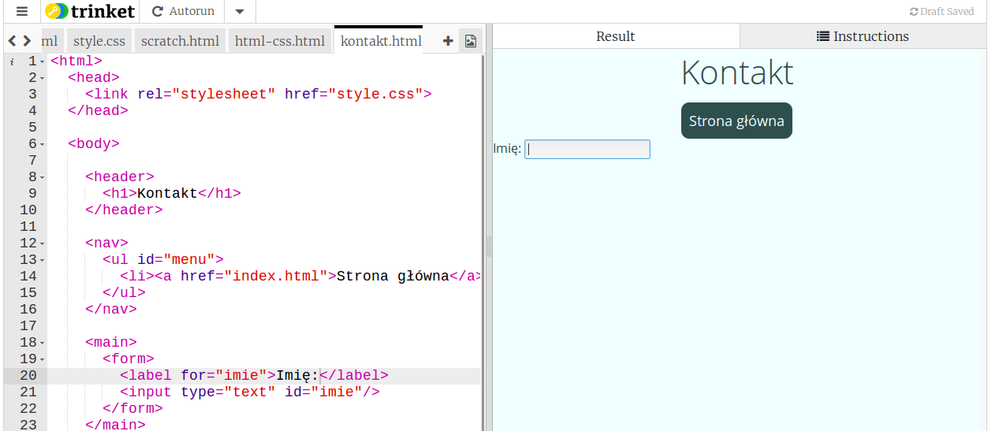
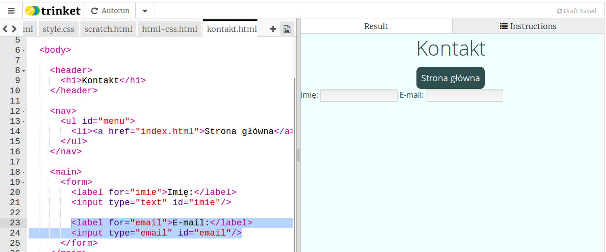
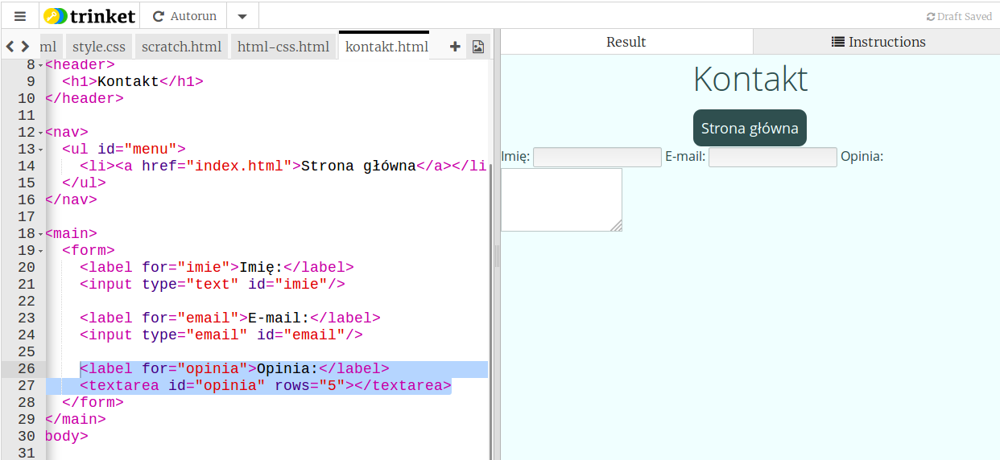
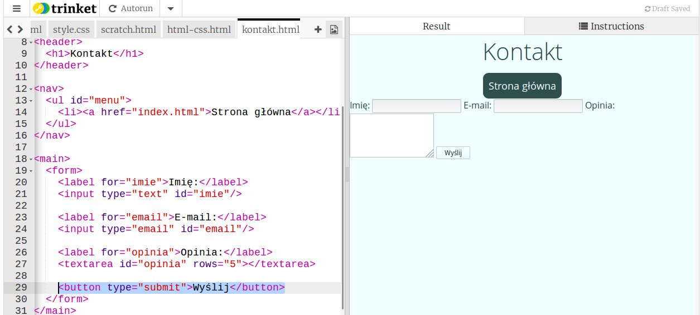
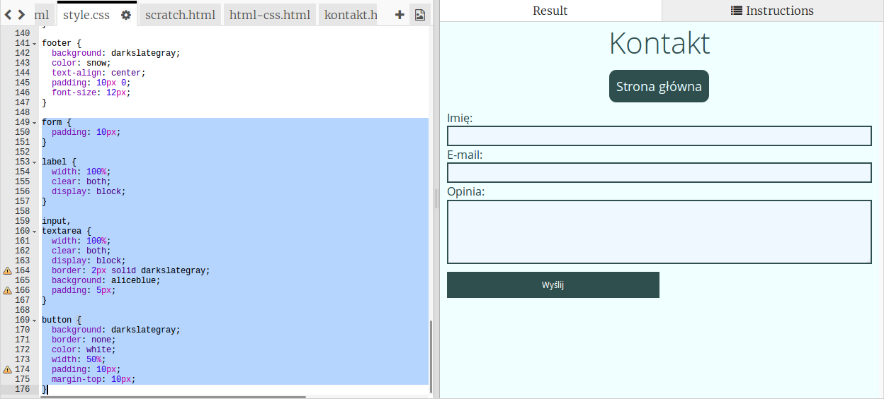

Wstęp
Dajmy czytelnikom naszej strony możliwość wysłania swojej opinii poprzez specjalny formularz.
Formularze
Zadania do wykonania
-
Utworzenie formularza wymaga dodania specjalnego znacznika
form. W tym celu utworzymy nową podstronę "kontakt.html" i dodamy na niej formularz:
-
Formularz dodany, ale jak widzisz, na stronie nie ma po nim ani śladu. Dodajmy więc jakieś pola. Nasi użytkownicy będą musieli podać swoje imię, żeby móc wysłać opinię. Do pobrania krótkich danych tekstowych służy znacznik
inputktórego atrybuttypemusimy ustawić natext. W ten sposób:
-
Użytkownik nie wie jednak, że ma wpisać w to pole imię. Dodajmy specjalny znacznik
label, który jest etykietką dla pola. Zauważ, że atrybutforjest taki sam jak atrybutiddodanego wcześniej pola. Pamiętaj, żeby te nazwy się zgadzały!
-
Teraz dodajmy kolejne pole, w którym użytkownik poda swój adres email, dzięki czemu będziesz mógł mu podziękować za opinię:

-
I miejsce na opinię, do tego celu użyjemy innego znacznika,
textarea, który służy do wpisywania dłuższych danych tekstowych:
Widzisz, textarea nie ma określonego
type, za to w przeciwieńswie do normalnych pól ma atrybutrows, który określa ilość wierszy, jaka jest widoczna podczas wpisywania tekstu. -
Na koniec dodamy przycisk do wysyłania formularza, będzie do tego służył znacznik
buttonz atrybutemtypeustawionym nasubmit:
-
OK, ale teraz nic nie dzieje się przy próbie wysłania formularza. Niestety korzystają z trinketa nie możemy wysłać formularza bezpośrednio na swój adres e-mail nie korzystając z innych aplikacji. Na ostatnich zajęciach dowiesz się jednak jak możesz kontynuować edytowanie swojej strony bez użycia trinketa i wtedy wrócimy do tej kwestii.
-
Wykorzystaj znane ci właściwości CSS do ostylowania formularz. Nasz formularz wygląda tak:

Zapisz swój projekt
Struktura twojej nowej podstrony
Dzisiaj dowiedziałeś się jak w prosty sposób można podzielić twoją stronę internetową na sekcje. Niektóre sekcje mają specjalne role i warto dla nich używać specjalnych znaczników.
Jak pewnie zauważyłeś, wprowadzenie nowych znaczników w większości przypadków nie popsuło niczego na stronie. Kod jest jednak uporządkowany.
Te znaczniki są bardzo ważne dla osób, które mają problemy ze wzrokiem. Osoby takie korzystają z narzędzi czytających zawartość strony internetowej na głos. Narzędzia te dużo lepiej radzą sobie ze stroną, jeśli posiada ona specjalne znaczniki, które dzisiaj poznaliśmy. Z pewnością chcesz, żeby wszyscy mogli poznać zawartość Twojej strony, dlatego ważne jest używanie tych znaczników w poprawny sposób.